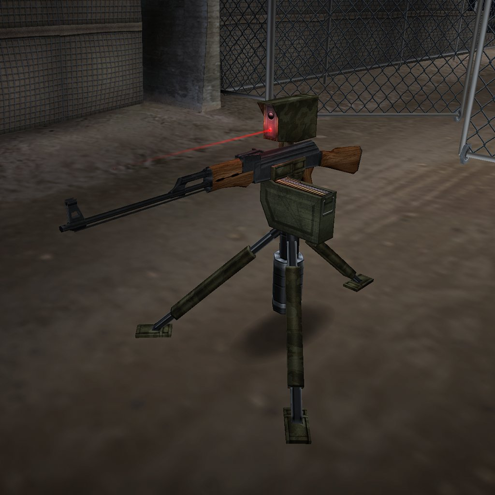
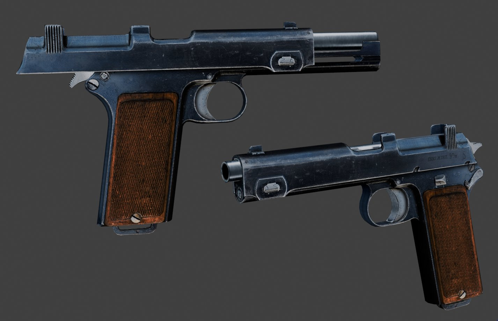
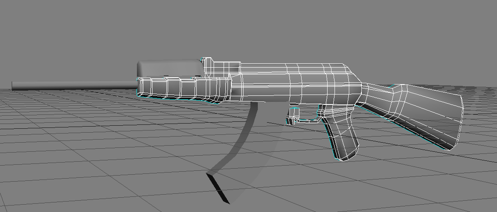
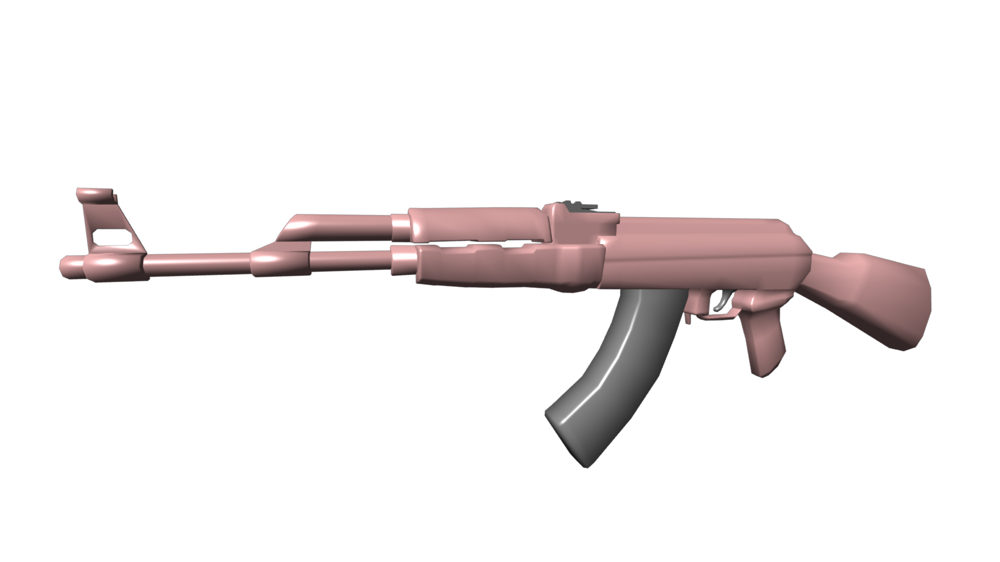
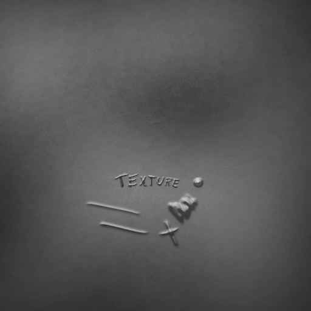
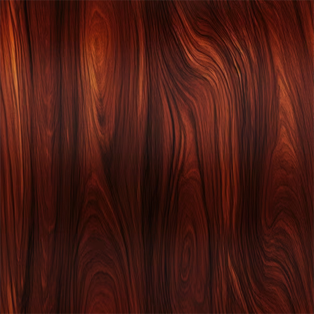
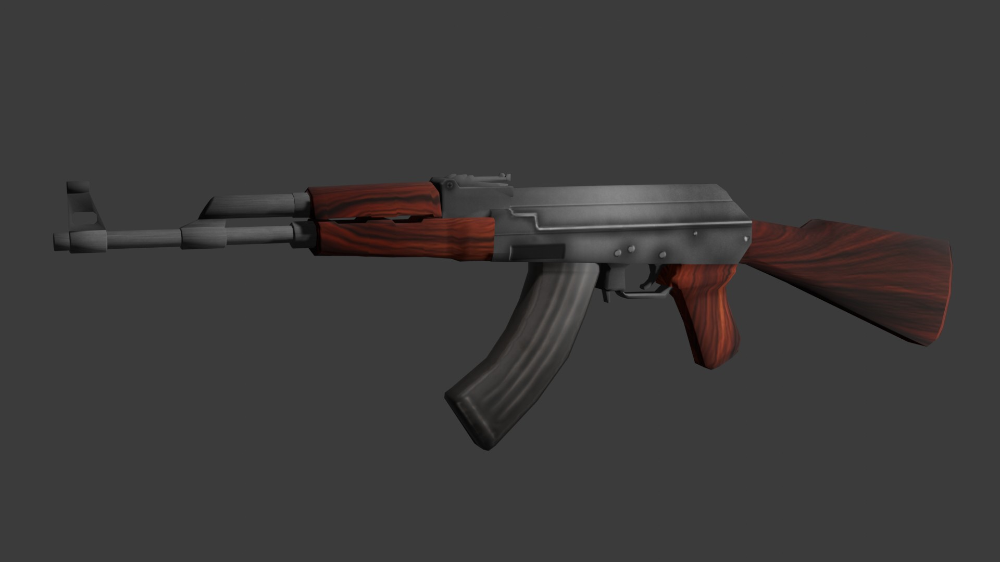
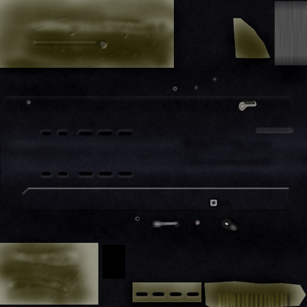
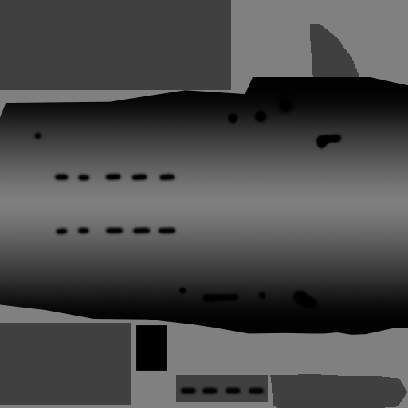
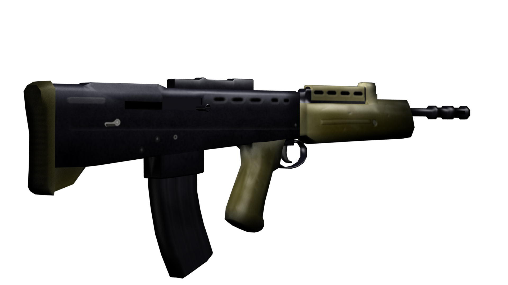

Nick Turner's 3D Portfolio
In Summer 2024 I was testing artstyles for my game and made some experimental models to learn to imitate the legacy texturing workflow featured in games such as Counter-Strike from 2001. This involves painting highlights and shadows onto low-poly models to create the illusion of curvature and using the texture map to fill in most of the details.


Examples of a models using the legacy texturing workflow, also called 'GoldSrc' texturing due to it's use in the game engine.
AK-47
The Process:
The first model I created was an AK-47. First I modelled it from a reference image, as low-poly I could make it while still keeping the outline.


After that I created a metal texture to use as the base colour of the gun. Using Photoshop's Bevel tool I found I could create bumps.

I then UV unwrapped the model into two seperate tiles for the metal and the wood parts. All UVs of symmetrical areas were mirrored to save space on the texture map. After finishing the UVs I painted on the metal parts in Photoshop.


Final Result:

I feel I made a few mistakes in the creation of this model, and keeping them in mind I had a go at modelling another weapon.
SA80
I modelled this gun in Low-Poly, however I chose to model more of the details this time. I also painted on curvature by making the top of the weapon lighter and the bottom darker. To improve the visuals, I painted a specular map. I made sure that the top of the model had stronger specular highlights to maintain the illusion of curvature, and also made sure that the dark parts of the gun that were supposed to be holes did not have any highlights, to maintain their definition.


The texture and specular map.


A render of the gun and turnaround.